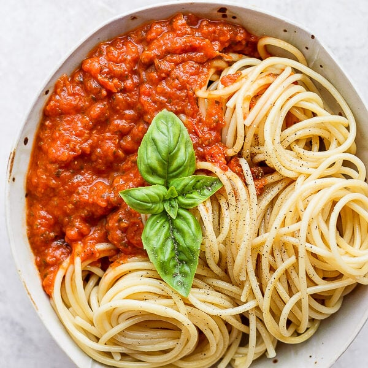

Homemade Roasted Spaghetti Sauce

Description:
This recipe will bring your pasta sauce to the next level without much effort.
All you need is a few ingredients, an oven and a blender.
Ingredients:
- Spaghetti pasta
- 400 grams Cherry Tomatoes
- 3 Garlic cloves
- Salt and pepper to taste
- Pinch of red chili flakes
- 1 tsp Italian Seasoning
- 2 tbsp Olive Oil
- 1 tbsp Balsamic Vinegar
- Fresh Basil
Steps:
- Preheat oven to 425 degrees F.
- Place tomatoes, sliced garlic, olive oil and balsamic vinegar on baking sheet and toss until everything is well coated.
- Sprinkle salt, pepper, red chili flakes, and italian seasoning to tomatoes and garlic and toss again until coated.
- Bake in oven for 20 min.
- Place baking sheet on stove to cool completely. About 15 to 20 minutes
- Once cooled, placed everything in the blender and pulse until the desired sauce consistency is reached.
- Pour sauce in pan and heat on stove for pasta(Please Note: If you have an immersion blender you can skip the cooling step and add tomatoes straight to pot and blend in the pot.
- While sauce is heating, cook pasta following directions on the box.
- Once pasta is finished add to plate and top with sauce and basil.